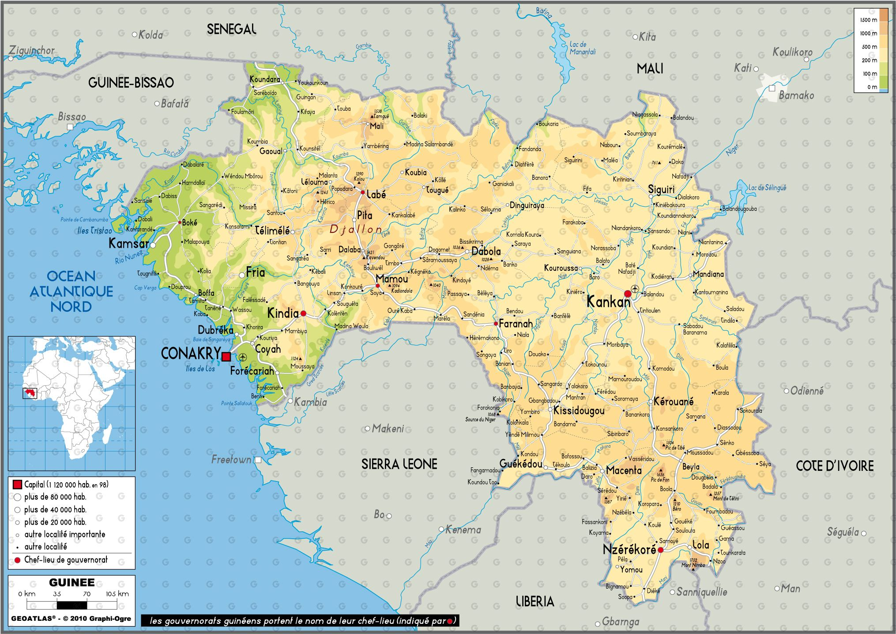

Située en Afrique de l'Ouest au bord de l'océan Atlantique, la Guinée s'étend sur 245 857 km². Le pays se divise en quatre régions naturelles distinctes : la Basse-Guinée côtière, les montagnes de la Moyenne-Guinée, les savanes de la Haute-Guinée et la Guinée forestière au sud-est, où culmine le mont Nimba à 1 752 mètres. Surnommée le « château d'eau de l'Afrique de l'Ouest », elle donne naissance aux grands fleuves Niger, Sénégal et Gambie. Cette diversité géographique offre des paysages spectaculaires, allant des plages et cascades aux forêts denses. Le pays abrite une biodiversité remarquable, notamment dans ses réserves classées à l'UNESCO. Enfin, son sous-sol regorge de richesses naturelles, dont les plus grandes réserves mondiales de bauxite, ainsi que de l'or, du fer et des diamants.
